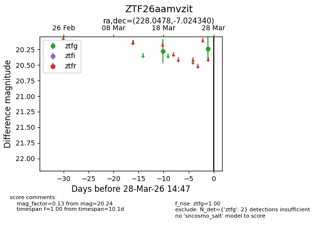
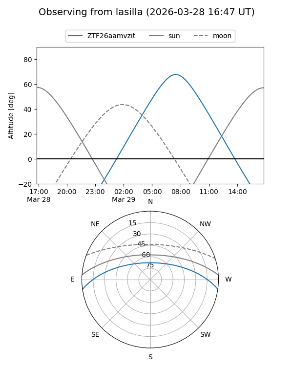
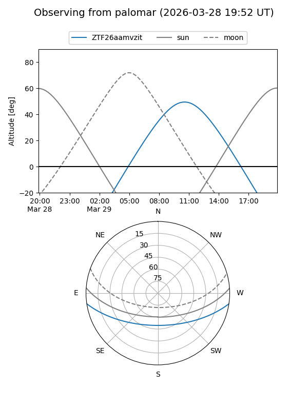

ZTF26aamvzit
Target ZTF26aamvzit at 2026-03-28 14:50
Aliases and brokers:
FINK: link
Lasair: link
ALeRCE: link
alt names
ZTF26aamvzit (ztf,fink_ztf)
Coordinates:
equatorial (ra, dec) = 228.0478,-7.02434
equatorial (HMS+DMS) = 15:12:11.47,-07:01:27.62
galactic (l, b) = (353.0035,+41.76921)
Flags:
Photometry:
last ztfg=20.24
2 ztfg detections
Lightcurve

Visibility


Additional plots